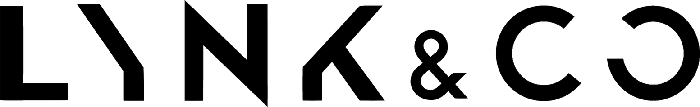
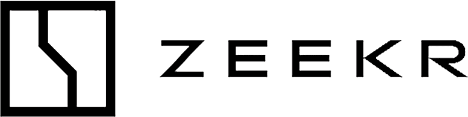

HARDT.WIP
The personal side of Samuel Engelhardt, where things go up while they're still unfinished.
This started as a small creative hub: graphic design for people close by, made in whatever hours were left over. That turned into Mixtape, a sub-brand I set up so all my interests could sit in one place instead of scattered across folders. Mixtape has since grown into Hardt.wip. The early work stays part of it, but the space itself is being rebuilt from scratch, which is more or less what the name commits me to.
Follow @hardt.wipPrivileged to work with


What I'm about
Six things I keep coming back to.
3D & Surfacing
NURBS and polygon modeling in Alias and Blender, rough early volumes as well as finished Class A surfaces. I'm still changing how I do both.
Design Intent
I work with designers in transportation and industrial design teams and turn what they intend into geometry that survives engineering.
Visualization
Renders and stills out of Vred and Blender, then Photoshop until they stop looking like renders.
Graphic Design
Where Hardt.wip started. Logos, layouts and brand work made in spare hours, and I still take it on.
Team Play
Years of handball and years of studio work rewarded the same thing: reading the play early and covering the people next to you.
AI & New Workflows
I'm working out where AI actually fits the pipeline. The Volvo concept started from AI sketches, and smaller AI-assisted steps have made it into daily work. This site is part of the same experiment.